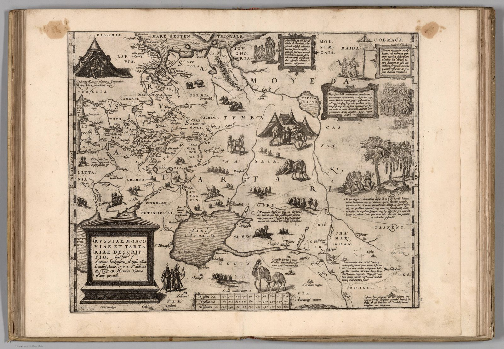

Russiae, Moscoviae et Tartariae descriptio

Machine transcription and translation (Claude Opus 5.5, 26 Nov 2026), not yet reviewed by a specialist. [?] marks an uncertain reading. The texts were compared afterwards with Marcel van den Broecke's published edition (Ort 162).
Anthony Jenkinson's map of Russia, Muscovy and Tartary, first printed in London in 1562 and engraved for Abraham Ortelius's Theatrum orbis terrarum (Antwerp, 1570). Jenkinson travelled for the Muscovy Company to Moscow, down the Volga and across the Caspian to Bukhara (1558–1559). The map shows Ivan IV enthroned, and notes on the peoples he met or heard of: the golden idol Zlata Baba, sun-worshippers, a horde turned to stone, the Kirghiz who hang their dead in trees, Samarkand and the tomb of Tamerlane, and the road to Cathay. An AI model, Claude Opus 5.5, read the map from the David Rumsey Map Collection copy without any reference text: 63 texts, notes and names, which can be read in the panel and the tour, and 205 place names, shown under “Towns, rivers and lakes” in the filter. Turn the sheet over for Ortelius's description of Russia, read by the same model from the Biblioteca Nacional de España copy of the 1595 Latin edition (p. 104); it is the 1570 text with two later additions to the reading list.
IOANNES BASILIVS MAGNVS, Jmperator Russiae; Dux Moscouiae et cetera.
Ioannes Basilius the Great [Ivan IV], Emperor of Russia, Duke of Muscovy, etc.
Show on the mapRVSSIAE, MOSCOVIAE ET TARTARIAE DESCRIPTIO. Auctore Antonio Ienkensono Anglo, edita Londini Anno. 1562. et dedicata illustrissimo Domino Henrico Sÿdneo Walliae praesidi.
Description of Russia, Muscovy and Tartary. By Antonius Ienkensonus [Anthony Jenkinson], an Englishman; published in London in the year 1562 and dedicated to the most illustrious Lord Henricus Sydneus [Sir Henry Sidney], President of Wales.
Show on the mapHaec pars Lituaniae Imperatori Russiae subdita est.
This part of Lithuania is subject to the Emperor of Russia.
Show on the mapZlata Baba, id est aurea vetula ab Obdorianis, & Iougorianis religiose colitur. Idolum hoc sacerdos consulit, quid ipsis faciendum, quoue sit migrandum, ipsumque (dictu mirum) certa consulentibus dat responsa, certique euentus consequuntur.
Zlata Baba, that is, the golden old woman, is religiously worshipped by the Obdorians and the Iougorians. The priest consults this idol about what they are to do, or where they are to migrate, and it (wonderful to say) gives sure answers to those who consult it, and sure outcomes follow.
Show on the mapHaec saxa hominum iumentorum camelorum pecorumque, caeterarumque rerum formas referentia, Horda populi gregis pascentis, armentaque fuit: Quae stupenda quadam metamorphosi, repente in saxa riguit, priori forma nulla in parte diminuta. Euenit hoc prodigium annis circiter 300. retro elapsis:
These stones, which show the shapes of men, beasts of burden, camels, cattle and other things, were a Horde of a people pasturing their flocks and herds: which, by some astonishing metamorphosis, suddenly stiffened into stones, its former shape diminished in no part. This prodigy happened about 300 years ago.
Show on the mapA Mangusla Shaÿsuram vsque 20. dierum iter habent, sine vllis sedibus, cum summa aquae penuria A Shaÿsura vsque Bogar, par itineris interuallum latrocinijs infestum
From Mangusla to Shaysura they have a journey of 20 days, without any dwellings, with the greatest scarcity of water. From Shaysura to Bogar [Bukhara] is an equal stretch of road, infested by robbers.
Show on the mapCorasan parua, à Rege Persico adiuuantibus Tartaris 1558. expugnata fuit
Little Corasan [Khorasan] was conquered by the King of Persia, with the help of the Tartars, in 1558.
Show on the mapShamarcandia olim totius Tartariae metropolis fuit, at nunc ruinis deformis iacet, vna cum multis antiquitatis vestigijs. Hic conditus est Tamerlanes ille, qui olim Turcarum Imperatorem Baÿasitem captum aureis catenis vinctum, circumtulit Incolae mahumetani sunt.
Shamarcandia [Samarkand] was once the metropolis of all Tartary, but now lies disfigured by ruins, together with many traces of antiquity. Here is buried that Tamerlane who once carried about the Emperor of the Turks, Bayasit [Bayezid I], captured and bound in golden chains. The inhabitants are Mahometans.
Show on the mapHorum regionum incolae Solem, vel rubrum pannum pertica suspensum adorant. In castris vitam ducunt; ac omnium animantium, serpentium, vermiumque carne vescuntur. ac proprio idiomate vtuntur.
The inhabitants of these regions worship the Sun, or a red cloth hung on a pole. They spend their life in camps; and they eat the flesh of all living creatures, serpents and worms. And they use a language of their own.
Show on the mapKirgessi gens cateruatim degit, id est in hordis. habetque ritum huiusmodi. cum rem diuinam ipsorum sacerdos peragit, sanguinem, lac, & fimum iumentorum accipit, ac terrae miscet, inque vas quoddam infundit, eóque arborem scandit, atque concione habita, in populum spargit, atque haec aspersio pro Deo habetur & colitur. Cum quis diem inter illos obit, loco sepulturae arboribus suspendunt.
The Kirgessi people live in troops, that is, in hordes, and have a rite of this kind. When their priest performs the divine service, he takes blood, milk and the dung of beasts of burden, and mixes them with earth, and pours it into a certain vessel, and with it climbs a tree, and having made an address, sprinkles it over the people; and this sprinkling is held and worshipped as God. When anyone among them dies, instead of burial they hang him in trees.
Show on the mapCascara, hinc triginta dierum itinere orientem versus incipiunt termini imperij Cathaÿae Ab his limitibus ad Cambalu, trium mensium iter interiacet.
Cascara [Kashgar]: from here, thirty days' journey towards the east, begin the borders of the empire of Cathay. From these borders to Cambalu [Khanbaliq, Beijing] lies a journey of three months.
Show on the mapScala miliarium | Russica 80 160 240 320 400 480 560 640 720 800 | Anglica 60 120 180 240 300 360 420 480 540 600 | Hispanica 20 40 60 80 100. 120 140 160 180 200
Scale of miles. Russian: 80 to 800; English: 60 to 600; Spanish: 20 to 200 (ten equal cells).
Show on the mapCum priuilegio.
With privilege.
Show on the mapBIARMIA
Biarmia
Show on the mapCORELIA
Corelia [Karelia]
Show on the mapSINVS FINLANDICVS.
The Finnish Gulf [Gulf of Finland].
Show on the mapNOVOGARDIA.
Novogardia [Novgorod land].
Show on the mapLIVONIA.
Livonia.
Show on the mapLITVANIA
Litvania [Lithuania]
Show on the mapPONTVS EVXINVS.
The Euxine Sea [Black Sea].
Show on the mapMARE SEPTENTRIONALE.
The Northern Sea.
Show on the mapIOVGHORIA,
Iovghoria [Yugra]
Show on the mapLAPPIA.
Lappia [Lapland].
Show on the mapCONDORA
Condora
Show on the mapOBDORA.
Obdora
Show on the mapDVINA
Dvina
Show on the mapMESCHORA.
Meschora.
Show on the mapPERMIA
Permia
Show on the mapCARGAPOLIA.
Cargapolia [Kargopol region].
Show on the mapVSTIVG
Vstivg [Ustyug].
Show on the mapVOLOGDA.
Vologda.
Show on the mapTVMEN
Tumen [Tyumen]
Show on the mapVACHIN.
Vachin.
Show on the mapRVSSIA.
Russia (tentative grouping).
Show on the mapCEREMISELOWGOVOI.
Ceremise Lowgovoi [the Meadow Cheremis].
Show on the mapCAZANE.
Cazane [Kazan].
Show on the mapVOLODEMER.
Volodemer [Vladimir].
Show on the mapMOSCOVIA.
Moscovia [Muscovy].
Show on the mapCEREMISEGORNI.
Ceremise Gorni [the Hill Cheremis].
Show on the mapREZANE.
Rezane [Ryazan].
Show on the mapMORDVA.
Mordva [the Mordvins].
Show on the mapCRIMEA.
Crimea.
Show on the mapASTRACAN.
Astracan [Astrakhan].
Show on the mapCHIRKASSI
Chirkassi [Circassians]
Show on the mapPETIGORSKI.
Petigorski.
Show on the mapMARE CASPIVM
The Caspian Sea
Show on the mapMEDIA
Media
Show on the mapPERSIA.
Persia
Show on the mapMOLGOMZAIA
Molgomzaia
Show on the mapBAIDA
Baida
Show on the mapSAMOYEDA
Samoyeda [the land of the Samoyeds]
Show on the mapCASSACKIA
Cassackia
Show on the mapNAGAIA
Nagaia [Nogai]
Show on the mapTARTARI.
The Tartars
Show on the mapTVRKMEN.
Turkmen [Turkmens]
Show on the mapSHAMARGHAN
Shamarghan [Samarkand]
Show on the mapBoghar. vrbs amplissima
Boghar [Bukhara], a very large city.
Show on the mapMHOGOL
Mhogol
Show on the mapCOLMACK
Colmack [Kalmyks]
Show on the mapTASKENT
Taskent [Tashkent]
Show on the mapKIRGES
Kirges [Kyrgyz]
Show on the mapOCCIDENS
West
Show on the mapORIENS
East
Show on the mapRVSSIA aut potiùs MAGNI DVCIS MOSCOVIÆ IMPERIVM.
RUSSIA, or rather THE EMPIRE OF THE GRAND DUKE OF MOSCOVIA [Muscovy].
Show on the mapHÆC Tabula non continet totam Russiam, nam deest Polonia & Lithuania, quæ sub Russiæ nomine etiam comprehenduntur: sed vniuersum imperium Moscouiæ Ducis, quod mari Glaciali à Septemtrione terminatur, ab Oriente Tartaros, à Meridie Turcos & Polonos, ab Occidente verò Liuones & Sueciæ regem, vicinos habet, exhibet: cuius omnes regiones sigillatim describit Sigismundus Baro ab Herberstain: ad quem harum rerum studiosos lectores relegamus. De incolarum religione, ritu, viuendique more, hæc pauca libenter ex eodem excerpsimus.
This map does not contain the whole of Russia, for Polonia [Poland] and Lithuania, which are also comprised under the name of Russia, are missing; but it shows the entire empire of the Duke of Moscouia [Muscovy], which is bounded on the north by the Frozen Sea, and has as neighbours on the east the Tartars, on the south the Turks and the Poles, and on the west the Liuones [Livonians] and the king of Sweden. All its regions are described one by one by Sigismundus, Baron of Herberstain [Sigismund von Herberstein], to whom we refer readers interested in these matters. Concerning the religion, rite and way of life of the inhabitants, we have gladly excerpted these few points from the same author.
Show on the mapIn religione ferè Græcorum ritum sequuntur. Eorum Sacerdotes vxores ducunt. Imagines in templis colunt. Infantes cùm baptizantur, ter in aquam toti immerguntur; aqua verò baptismatis singulis infantibus consecratur. Confessionem quamuis ex constitutione habent, vulgus tamen eam Principum opus esse, & ad nobiles pertinere existimat. Finita confessione, pœnitentiaque iuxta delicti qualitatem iniuncta, signo crucis frontem pectusque signant, magnoque gemitu clamant, Iesu Christe fili Dei, miserere nostri. Hæc est communis illorum oratio. Dominicam enim orationem perpauci sciunt.
In religion they follow, for the most part, the rite of the Greeks. Their priests marry wives. They venerate images in churches. When infants are baptised, they are immersed wholly in the water three times; and the water of baptism is consecrated separately for each infant. Although they have confession by ordinance, the common people nevertheless consider it to be the business of princes and to belong to the nobles. When confession is finished and a penance has been imposed according to the nature of the offence, they sign their forehead and breast with the sign of the cross, and cry out with great groaning: Jesus Christ, Son of God, have mercy on us. This is their common prayer; for very few know the Lord's Prayer.
Show on the mapCommunicant sub vtraque specie, miscentes panem vino, seu corpus sanguine. Pueris septem annorum porrigunt Sacramentum: dicuntque tum hominem peccare. Festos dies viri præstantiores, peractis sacris epulis, ebrietate, & vestitu eleganti venerantur; vulgus & serui plerumque laborant; dicentes, feriari & à labore abstinere, dominorum esse. Purgatorium non credunt: pro defunctis tamen sacra faciunt. Aqua benedicta nemo se aspergit, nisi à Sacerdote adspergatur. Ieiunant in Quadragesima septem perpetuas septimanas.
They take communion under both kinds, mixing the bread with the wine, that is, the body with the blood. They give the Sacrament to boys of seven years, and they say that a person then [begins to] sin. The more eminent men, once the sacred rites are over, celebrate feast days with banquets, drunkenness and elegant dress; the common people and the servants mostly work, saying that keeping holiday and abstaining from work is a matter for masters. They do not believe in Purgatory; yet they perform sacred rites for the dead. No one sprinkles himself with holy water unless he is sprinkled by a priest. In Lent they fast for seven continuous weeks.
Show on the mapMatrimonia contrahunt; Bigamiam concedunt, sed vix legitimum matrimonium esse putant. Diuortia admittunt. Adulterium non appellant, nisi quis alterius vxorem habuerit. Mulierum conditio miserrrima est: nullam enim honestam credunt, nisi domi conclusa viuat, adeoque custodiatur, vt nusquam prodeat.
They contract marriages; they permit bigamy, but hardly regard it as a lawful marriage. They allow divorce. They do not call it adultery unless a man has had another man's wife. The condition of women is most wretched: for they consider no woman honourable unless she lives shut up at home and is so closely guarded that she never goes out.
Show on the mapGens astuta & fallax, & quæ magis seruitute quàm libertate gaudet. Omnes se Principis seruos fatentur. Rarò illi est quies: nam aut bellum Lithuanis, aut Liuoniensibus, aut Tartaris infert: aut si nullum bellum gerit, sunt in præsidiis circa Tanaim & Occan fluuios, ad reprimendas Tartarorum deprædationes.
A cunning and deceitful people, and one that delights more in servitude than in liberty. All of them profess themselves the Prince's slaves. He rarely has rest: for he makes war on the Lithuanians, or on the Livonians, or on the Tartars; or, if he is waging no war, they are in garrisons around the rivers Tanais [Don] and Occan [Oka], to repel the raids of the Tartars.
Show on the mapTunicas oblongas, sine plicis, manicis strictioribus, Hungarorum ferè more gestant: ocreas ferè rubeas easque breuiores, vt quæ genua nòn[?] attingant, soleasque ferreis clauiculis munitas habent. ventrem nequaquam, sed fœmora cingunt; atque adeò pubetenus, quo magis promineat venter, cingulum dimittunt. Iustitiam strenuè exercent in prædones. Furta & homicidia rarò capitali pœna puniuntur.
They wear long tunics without pleats, with rather tight sleeves, much in the fashion of the Hungarians; boots, mostly red, and rather short, so that they do not reach the knees, and they have soles reinforced with small iron nails. They gird not the belly but the hips; and indeed they let the belt down to the groin, so that the belly may stick out the more. They exercise justice vigorously against robbers. Thefts and homicides are rarely punished with the death penalty.
Show on the mapMonetam argenteam habent, non rotunda, sed oblonga & ouali quodammodo forma. Pellibus nobilibus ac pretiosissimis, quæ hinc per totam Europam exportantur, regio abundat: & vbique ferè siluosa est.
They have silver coinage, not round, but oblong and of a somewhat oval shape. The region abounds in noble and most precious furs, which are exported from here throughout the whole of Europe; and it is almost everywhere wooded.
Show on the mapHæc omnia ex citato Sigismundo. Plura de his regionibus habes apud Mathiam à Michou, Alexandrum Gaguinum in libello de Sarmatijs, Alberti Crantzij Wandaliam, P. Iouium de legatione Moscouitarum ad Clementem VII. Albertum Campensem ad eundem, & Itinerarium[?] Persicum Ambrosij Contareni. Sed videndus est etiam Bonfinij liber I. & II. Decadis primæ rerum Hungaricarum; item liber primus vitæ Basilidis, ab Oderbornio descriptæ. item Saxoniæ Chronicon Dauidis Chytræi.
All this is from the Sigismundus cited above. You will find more on these regions in Mathias à Michou [Maciej of Miechów], in Alexander Gaguinus [Alessandro Guagnini] in his little book on the Sarmatias, in the Wandalia of Albertus Crantzius [Albert Krantz], in P. Iouius [Paolo Giovio] on the embassy of the Muscovites to Clement VII, in Albertus Campensis [Albert Pigghe] to the same pope, and in the Persian Itinerary of Ambrosius Contarenus [Ambrogio Contarini]. But one should also see Bonfinius [Antonio Bonfini], books I and II of the first Decade of the History of Hungary; likewise the first book of the life of Basilides, written by Oderbornius [Paul Oderborn]; likewise the Chronicle of Saxony of David Chytraeus.
Show on the map| On the map | Reading |
|---|---|
| Duina fl | Duina river [Western Dvina] |
| Rougodiue vel Narue | Rougodiue or Narue [Narva] |
| Kiou:[?] | Kiou [Kyiv] |
| yama[?]· | yama |
| Volgha fl. | Volgha river |
| Widepskÿ. | Widepsky [Vitebsk] |
| Iuan gorode | Iuan gorode [Ivangorod] |
| Ozera | Ozera |
| Velika fl. | Velika river |
| Boristhenes uel Neper fl. | Boristhenes or Neper river [Dnieper] |
| Owpocki | Owpocki |
| Kebela | Kebela |
| Pskoue | Pskoue [Pskov] |
| Ourshock lacus | Ourshock lake |
| Voronets | Voronets |
| Desna fl. | Desna river |
| Borckhoue· | Borckhoue |
| Nouogorod Velica | Nouogorod Velica [Veliky Novgorod] |
| Boristhine[?] fl. | Boristhine river [Dnieper] |
| Sost[?] fl. | Sost river |
| Volock lacus | Volock lake |
| Vladiskoÿ lacus. | Vladiskoy lake |
| Stara dowbe· | Stara dowbe |
| Ihua[?]· | Ihua |
| Volotchock | Volotchock |
| Louke | Louke |
| Volga Rha uel Edel fl. | Volga, Rha or Edel river [Volga] |
| Vysta fl. | Vysta river |
| Smolensko | Smolensko [Smolensk] |
| Onega fl. | Onega river |
| Torshock | Torshock [Torzhok] |
| Vstiug Zelesna | Vstiug Zelesna |
| Vasna | Vasna |
| Palus Meotis | Palus Meotis [Sea of Azov] |
| Domshaff· | Domshaff |
| Caßhim[?] | Casshim [Kashin] |
| Mosko fl. | Mosko river [Moskva] |
| Kholopia | Kholopia |
| Asou. | Asou [Azov] |
| Mologha fl. | Mologha river |
| Tuer | Tuer [Tver] |
| Goradine | Goradine |
| Kola fl. | Kola river |
| Kildma[?] ostroua | Kildma islands |
| 2·C gratię· | C. gratiae (Cape of Grace) |
| 1·Tre ostroui· | Tre ostroui (three islands) |
| Ouglets | Ouglets [Uglich] |
| Solofki[?] | Solofki [Solovki] |
| Mosaisko | Mosaisko [Mozhaysk] |
| Moskua· | Moskua [Moscow] |
| Ocka fl. | Ocka river [Oka] |
| Biatla ozera. | Biatla lake |
| Varziga fl. | Varziga river |
| Onega fl. | Onega river |
| Chiauon fl. | Chiauon river |
| C·Soberbere | Cape Soberbere |
| Yearaslaue | Yearaslaue [Yaroslavl] |
| Wardhous | Wardhous [Vardø] |
| Rostoue | Rostoue [Rostov] |
| Caegapowl. | Caegapowl [Kargopol] |
| Casbi | Casbi |
| Khegore | Khegore |
| Troitskoy | Troitskoy |
| Owna | Owna |
| Kolom | Kolom [Kolomna] |
| Arseua fl. | Arseua river |
| Peraslaue | Peraslaue [Pereslavl] |
| Tetreue N· | Tetreue N. |
| Sosna fl. | Sosna river |
| Tereuetisko | Tereuetisko |
| Iuaña[?] creost | Iuana creost |
| Castrome | Castrome [Kostroma] |
| Ploga ozera. | Ploga lake |
| Pleßa | Plessa |
| Strelna fl. | Strelna river |
| Coubensko lacus | Coubensko lake |
| S·Maria nels[?]. | S. Maria nels |
| C. Confort· | Cape Confort |
| Ins S·Petri. | Island of St Peter |
| Pereslaue· | Pereslaue |
| Lomboßhock[?] | Lomboshock |
| Nicouesko[?] N· | Nicouesko N. |
| Don uel Tanais fl. | Don or Tanais river [Don] |
| Koskanos[?] | Koskanos |
| Knyssma[?] | Knyssma |
| Rezanskoÿ ozera. | Rezanskoy lake |
| S·Nicolas | St Nicolas |
| Pelitsa fl. | Pelitsa river |
| Baia S·Albani. | Bay of St Albans |
| Suchko· | Suchko |
| Pouloge N· | Pouloge N. |
| Ins S·Crucis. | Island of the Holy Cross |
| Polla[?]. | Polla |
| Desma fl. | Desma river |
| Shenkoria | Shenkoria |
| Prona | Prona |
| Yemsa | Yemsa |
| Foxnos[?] | Foxnos |
| Colmogro | Colmogro [Kholmogory] |
| Totma | Totma |
| Ins S·Iois[?]. | Island of St John |
| Iouriauich· | Iouriauich |
| Insulę S Georgij | Islands of St George |
| Zolotitza | Zolotitza |
| Morum· | Morum [Murom] |
| C·bõa[?] fortunę. | Cape of Good Fortune |
| P·Penticost[?] | P. Penticost |
| C·gallant | Cape Gallant |
| Ghalets | Ghalets |
| Tumensko | Tumensko |
| S·Michael. | St Michael |
| C·Race | Cape Race |
| Morzouets. | Morzouets |
| Corpus Xpi[?] P. | Corpus Christi Point |
| Balaghna | Balaghna [Balakhna] |
| Sughaua fl. | Sughaua river |
| Mosko fl. | Mosko river |
| Vstiuge | Vstiuge [Veliky Ustyug] |
| Cirus fl. | Cirus river |
| Toima fl. | Toima river |
| Duina fl. | Duina river [Northern Dvina] |
| Tenbres· | Tenbres |
| Micola | Micola |
| C·S Iois | Cape of St John |
| Volga fluuius. | Volga river |
| Tereckhoue | Tereckhoue |
| Iuan ozera | Iuan lake |
| Bobrouesko | Bobrouesko |
| Lampas | Lampas |
| Caßim gorode. | Cassim gorode [Kasimov] |
| Brousensko· | Brousensko |
| Shalcane. | Shalcane |
| Caminoz | Caminoz |
| Strelna | Strelna |
| Kowloai | Kowloai |
| Nysnouogorod | Nysnouogorod [Nizhny Novgorod] |
| Ousheia | Ousheia |
| Pinego fl. | Pinego river [Pinega] |
| Slohoda | Slohoda |
| Pereuolock[?] | Pereuolock |
| Ardwen | Ardwen |
| Iug fl. | Iug river [Yug] |
| stara Astracan, noua Astracan. | Old Astracan, New Astracan |
| Vasiligorod | Vasiligorod |
| Choghloma | Choghloma |
| Morzouets | Morzouets |
| Mezena fl. | Mezena river [Mezen] |
| Voichogda fl. | Voichogda river [Vychegda] |
| Schabogshar. | Schabogshar |
| Vrgis fl. | Vrgis river |
| Meshet. | Meshet |
| Ouruslaue fl. | Ouruslaue river |
| Colgoieue | Colgoieue [Kolguyev] |
| Astracan | Astracan [Astrakhan] |
| Shamagi | Shamagi [Shamakhi] |
| Suiatsko | Suiatsko |
| Volga fl. | Volga river |
| Pechora | Pechora |
| Lourghan | Lourghan |
| Nouo Zemla. | Nouo Zemla [Novaya Zemlya] |
| Dirben | Dirben [Derbent] |
| Permevelick | Permevelick |
| Samar fl. | Samar river [Samara] |
| Viatska fl. | Viatska river [Vyatka] |
| Viatsko. | Viatsko |
| Boghnata. | Boghnata |
| Pustezora | Pustezora |
| Kirck bash. | Kirckbash |
| Backow | Backow [Baku] |
| Shaueren. | Shaueren |
| Vaigatz | Vaigatz [Vaygach Island] |
| Bagthiar | Bagthiar |
| Oba fl. | Oba river [Ob] |
| Cama fl. | Cama river [Kama] |
| Orbis Zona montes. | Girdle of the World mountains [Ural Mountains] |
| Sherachick | Sherachick [Saraichik] |
| Shakashick | Shakashick |
| Mangusla | Mangusla [Mangyshlak] |
| yaick fl. | Yaick river [Ural] |
| Yem fl. | Yem river [Emba] |
| Siber | Siber [Sibir] |
| Oba fl. | River Oba [Ob] |
| Shaÿsure | Shaysure |
| Vrgeme | Vrgeme |
| Meshent. | Meshent |
| Ougus fl. | River Ougus |
| Ardock fl. | River Ardock |
| Cante | Cante |
| Marę | Mare |
| Paraponisi montes. | Paraponisi mountains |
| KITAIA LACVS. | Lake Kitaia |
| Corasam magna | Corasam magna (Great Corasam) |
| Carakol | Carakol |
| Kyrmi[?]: | na. | Kyrmina |
| Kirshij. | Kirshij |
| Ghudou a | Ghudoua |
| Sur fl. | River Sur |
| Amow fl. | River Amow |
| Cosin | Cosin |
| Balgh | Balgh [Balkh] |
| Shamarcandia | Shamarcandia [Samarkand] |
| Taskent | Taskent [Tashkent] |
| Cascara | Cascara [Kashgar] |
| Acsow | Acsow |
| Andeghen | Andeghen |